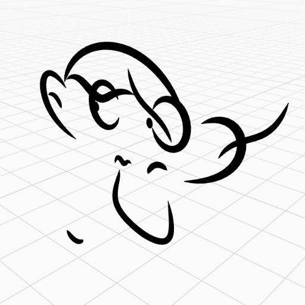
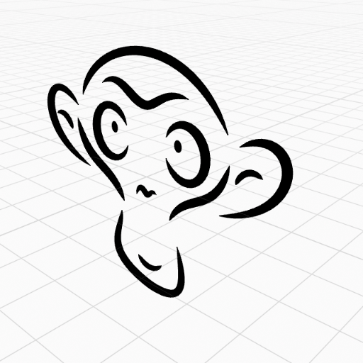
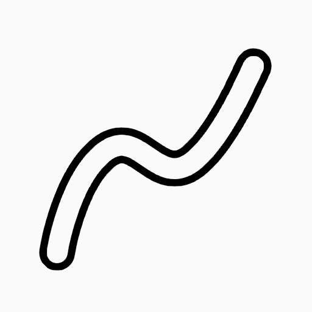

Menu Grease Pencil¶
Transform¶
Các nét vẽ có thể được chỉnh sửa bằng cách biến đổi vị trí của các điểm.
Move, Rotate & Scale¶
Tham khảo
- Mode:
Edit Mode
- Tool:
Toolbar ‣ Move, Rotate, Scale
- Menu:
Grease Pencil ‣ Transform ‣ Move, Rotate, Scale
- Shortcut:
G, R, S
Giống như các phần tử khác trong Blender, các điểm và nét vẽ có thể được di chuyển G, xoay R hay co giãn S như mô tả trong phần Basic Transformations. Khi ở Edit Mode, Proportional Editing cũng có sẵn cho các thao tác biến đổi.
Transform Snapping¶
Các phép biến đổi di chuyển, xoay và co giãn cơ bản cho các điểm/nét vẽ được chọn. Xem Move, Rotate, Scale Basics để biết thêm thông tin.
Tools¶
Tham khảo
- Mode:
Edit Mode
- Menu:
Grease Pencil ‣ Transform
- Tool:
Toolbar ‣ Bend/Shear
Các công cụ biến đổi Bend, Shear, To Sphere, Extrude và Shrink Fatten được mô tả trong phần Editing tools.
Mirror¶
Tham khảo
- Mode:
Edit Mode
- Menu:
Grease Pencil ‣ Mirror
- Shortcut:
Ctrl-M
Công cụ Mirror cũng có sẵn, hoạt động y hệt như với mesh vertices.
Snap¶
Tham khảo
- Mode:
Edit Mode
- Menu:
Grease Pencil ‣ Snap
- Shortcut:
Shift-S
Mesh snapping cũng hoạt động với các thành phần Grease Pencil.
Active Layer¶
Tham khảo
- Mode:
Edit Mode, Draw Mode
- Menu:
Grease Pencil ‣ Active Layer
- Shortcut:
Y
Chọn layer đang hoạt động.
Animation¶
Tham khảo
- Mode:
Edit Mode
- Menu:
Grease Pencil ‣ Animation
- Shortcut:
I
Các thao tác animation trên nét vẽ được mô tả trong phần Animation.
Interpolate Sequence¶
Tham khảo
- Mode:
Edit Mode
- Menu:
Grease Pencil ‣ Interpolate Sequence
Xem Interpolate Sequence.
Duplicate¶
Tham khảo
- Mode:
Edit Mode
- Menu:
Grease Pencil ‣ Duplicate
- Shortcut:
Shift-D
Nhân đôi các phần tử được chọn, không tạo bất kỳ kết nối nào với phần còn lại của các nét vẽ (khác với Extrude chẳng hạn), và đặt bản sao tại vị trí của các phần tử gốc.
Split¶
Tham khảo
- Mode:
Edit Mode
- Menu:
Grease Pencil ‣ Split
- Shortcut:
V
Operator Split tách phần được chọn của một đường cong khỏi phần còn lại, tạo một đoạn đường cong mới độc lập. Đường cong này sau đó có thể được di chuyển hay thay đổi mà không ảnh hưởng đến đường cong kia.
Nếu một đoạn của đường cong được chọn, nó sẽ được tách thành một đường cong mới có thể di chuyển hoặc chỉnh sửa độc lập.
Nếu chỉ một điểm điều khiển được chọn, nó sẽ được nhân đôi thành một điểm điều khiển tự do, trong khi bản gốc vẫn còn gắn với phần còn lại của đường cong.
Copy¶
Tham khảo
- Mode:
Edit Mode
- Menu:
Grease Pencil ‣ Copy
- Shortcut:
Ctrl-C
Sao chép các điểm/nét vẽ được chọn vào clipboard.
Paste¶
Tham khảo
- Mode:
Edit Mode
- Menu:
Grease Pencil ‣ Paste
- Shortcut:
Ctrl-V
Dán các điểm hoặc nét Grease Pencil từ clipboard nội bộ vào layer đang hoạt động.
- Dán ra phía sau Shift-Ctrl-V
Thêm các nét vẽ được dán vào sau tất cả các nét vẽ.
- Keep World Transform
Giữ nguyên biến đổi world của các nét vẽ lấy từ clipboard.
Show/Hide¶
Chứa các operator để điều chỉnh khả năng hiển thị của điểm và nét vẽ trong viewport.
Show All Layers¶
Tham khảo
- Mode:
Edit Mode
- Menu:
Grease Pencil ‣ Show/Hide ‣ Show All Layers
- Shortcut:
Alt-H
Hiển thị tất cả layers của Grease Pencil.
Hide Active Layer¶
Tham khảo
- Mode:
Edit Mode
- Menu:
Grease Pencil ‣ Show/Hide ‣ Hide Active Layer
- Shortcut:
H
Ẩn layers Grease Pencil đang hoạt động.
Hide Inactive Layers¶
Tham khảo
- Mode:
Edit Mode
- Menu:
Grease Pencil ‣ Show/Hide ‣ Hide Active Layer
- Shortcut:
Shift-H
Ẩn tất cả layers của Grease Pencil trừ layer đang hoạt động.
Separate¶
Tham khảo
- Mode:
Edit Mode
- Menu:
Grease Pencil ‣ Separate
- Shortcut:
P
Tách các phần tử khác nhau thành các object Grease Pencil mới dựa trên tiêu chí cụ thể.
- Selection
Tách các điểm hoặc nét vẽ được chọn thành một object mới.
- By Material
Tách hình học bằng cách tạo một object mới cho từng material.
- By Layer
Tách hình học bằng cách tạo một object mới cho từng layer. Xem 2D Layers để biết thêm thông tin.
Clean Up¶
Các công cụ này giúp dọn dẹp hình học suy biến trên các nét vẽ.
Clean Loose Points¶
Tham khảo
- Mode:
Edit Mode
- Menu:
Grease Pencil ‣ Clean Up ‣ Delete Loose Points
Xóa các nét vẽ chỉ có vài điểm.
- Limit
Số điểm để coi một nét vẽ là nét rời rạc.
Delete Duplicate Frames¶
Tham khảo
- Mode:
Edit Mode
- Menu:
Grease Pencil ‣ Clean Up ‣ Delete Duplicate Frames
Xóa mọi keyframe trùng lặp.
Merge by Distance¶
Tham khảo
- Mode:
Edit Mode
- Menu:
Grease Pencil ‣ Clean Up ‣ Merge by Distance
Đơn giản hóa một nét vẽ bằng cách gộp các điểm được chọn gần nhau hơn khoảng cách quy định. Lưu ý, trừ khi dùng Unselected, các điểm được chọn phải liên tục, nếu không chúng sẽ không được gộp.
- Merge Distance
Đặt ngưỡng khoảng cách để gộp các điểm.
- Unselected
Cho phép các điểm trong vùng chọn được gộp với các điểm không được chọn. Khi tắt, các điểm được chọn sẽ chỉ được gộp với các điểm được chọn khác.
Reproject Strokes¶
Tham khảo
- Mode:
Edit Mode
- Menu:
Grease Pencil ‣ Clean Up ‣ Reproject
Đôi khi bạn có thể đã vẽ các nét ở các vị trí khác nhau trong không gian 3D một cách không chủ ý, nhưng chúng trông vẫn đúng từ một mặt phẳng nhất định hoặc từ góc nhìn camera. Bạn có thể dùng Reproject để làm phẳng tất cả các nét vẽ được chọn từ một góc nhìn nhất định.
- Reprojected Type
- Front:
Chiếu lại các nét vẽ được chọn lên mặt phẳng phía trước (XZ).
- Side:
Chiếu lại các nét vẽ được chọn lên mặt phẳng bên (YZ).
- Top:
Chiếu lại các nét vẽ được chọn lên mặt phẳng trên (XY).
- View:
Chiếu lại các nét vẽ được chọn lên góc nhìn hiện tại.
- Surface:
Chiếu lại các nét vẽ được chọn lên các bề mặt mesh.
- Surface Offset
Khi Surface Mode được bật, điều khiển khoảng offset của nét vẽ so với object.
- Cursor:
Chiếu lại các nét vẽ được chọn theo phép xoay của con trỏ 3D.
- Keep Original
Giữ nguyên các nét vẽ gốc sau khi áp dụng công cụ.
Bản vẽ gốc nhìn từ phía trước.¶ |
 Bản vẽ gốc trong 3D Viewport.¶ |
 Các nét vẽ được chiếu lại lên mặt phẳng phía trước để sửa lệch nét.¶ |
Bản vẽ sau khi thực hiện phép chiếu lại, nhìn từ phía trước.¶ |


Outline¶
Tham khảo
- Mode:
Edit Mode
- Menu:
Grease Pencil ‣ Outline
Operator Outline chuyển đổi các nét Grease Pencil được chọn thành các hình chu vi kín. Nó tạo các nét mới quanh ranh giới bên ngoài của nét gốc, tạo ra một viền được tô đầy với độ dày có thể điều chỉnh.
- View
Xác định phương pháp chiếu được dùng để tạo viền:
- View:
Dùng phối cảnh viewport hiện tại làm mặt phẳng chiếu.
- Front:
Dùng các trục X-Z làm mặt phẳng chiếu (nhìn phía trước).
- Side:
Dùng các trục Y-Z làm mặt phẳng chiếu (nhìn từ bên).
- Top:
Dùng các trục X-Y làm mặt phẳng chiếu (nhìn từ trên).
- Camera:
Dùng phối cảnh của camera đang hoạt động làm mặt phẳng chiếu.
- Radius
Đặt độ dày của viền ở cả hai phía của nét gốc. Giá trị cao hơn cho chu vi rộng hơn.
- Offset Factor
Co giãn viền nét vẽ vào trong hoặc ra ngoài. - Giá trị dương đẩy chu vi ra ngoài. - Giá trị âm kéo chu vi vào trong. - Giá trị 0 đặt chu vi giữa trên nét gốc.
- Corner Subdivisions
Số lần phân nhỏ được dùng để làm mượt các góc ở điểm cuối nét vẽ và các điểm nối. Giá trị cao hơn cho góc mượt hơn nhưng làm tăng độ phức tạp của nét vẽ.
Nét vẽ gốc.¶ |
 Nét vẽ sau khi áp dụng operator Outline.¶ |


Delete¶
Tham khảo
- Mode:
Edit Mode
- Menu:
Grease Pencil ‣ Delete
- Shortcut:
X, Delete
Mở một menu pop-up chứa các operator để xóa hình học khỏi object Grease Pencil.
Strokes¶
Tham khảo
- Mode:
Edit Mode
- Menu:
Grease Pencil ‣ Delete ‣ Strokes
Xóa các điểm được chọn.
Nếu việc xóa điểm để lại chỉ một điểm duy nhất trong một nét vẽ, nét vẽ đó sẽ không còn hiển thị. Nếu tất cả các điểm của một nét vẽ bị xóa, toàn bộ nét vẽ bị xóa.
Only Strokes¶
Tham khảo
- Mode:
Edit Mode
- Menu:
Grease Pencil ‣ Delete ‣ Only Strokes
Chỉ xóa thành phần nét (viền) của các đường cong được chọn, bảo toàn mọi hình học fill liên quan.
Only Fills¶
Tham khảo
- Mode:
Edit Mode
- Menu:
Grease Pencil ‣ Delete ‣ Only Fills
Chỉ xóa thành phần fill của các đường cong được chọn, giữ nguyên phần nét (viền).
Dissolve¶
Tham khảo
- Mode:
Edit Mode
- Menu:
Grease Pencil ‣ Delete ‣ Dissolve
- Shortcut:
Ctrl-X
Dissolve xóa các điểm nằm giữa các điểm khác và nối các điểm còn lại.
Ctrl-X Mở một menu pop-up để chọn kiểu dissolve.
- Dissolve
Xóa các điểm được chọn mà không tách nét vẽ. Các điểm còn lại trong nét vẽ vẫn được nối với nhau.
- Dissolve Between
Xóa tất cả các điểm nằm giữa các điểm được chọn mà không tách nét vẽ. Các điểm còn lại trong nét vẽ vẫn được nối với nhau.
- Dissolve Unselect
Xóa tất cả các điểm không được chọn trong nét vẽ mà không tách nét. Các điểm còn lại trong nét vẽ vẫn được nối với nhau.
Delete Active Keyframe (Active Layer)¶
Tham khảo
- Mode:
Edit Mode
- Menu:
Grease Pencil ‣ Delete ‣ Delete Active Keyframe (Active Layer)
Xóa tất cả các nét vẽ tại frame hiện tại trong layer đang hoạt động.
Delete Active Keyframes (All Layers)¶
Tham khảo
- Mode:
Edit Mode
- Menu:
Grease Pencil ‣ Delete ‣ Delete Active Keyframes (All Layers)
- Shortcut:
Shift-Delete
Xóa tất cả các nét vẽ tại frame hiện tại trong mọi layer.